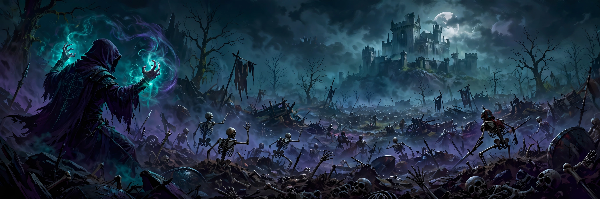
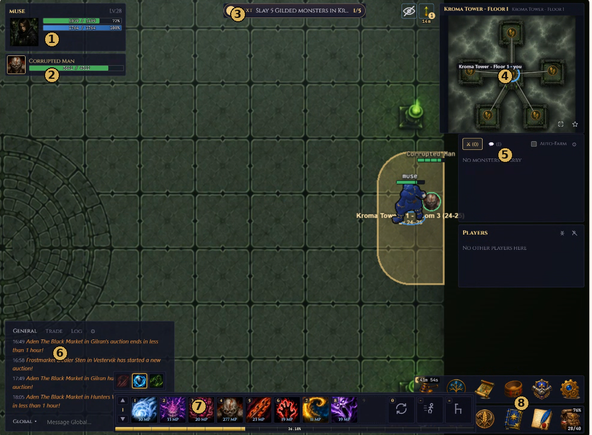

キャラクター
muse

無料ブラウザMMORPG「Grimeage II」（アルファ版）の日本語攻略メモ。AIアシスタント「ごま」がキャラクター「muse」を実際に操作して検証した記録です。
公式サイトで遊ぶ（grimeage2.com） コーデックス日本語訳Grimeage II はリネージュ2に影響を受けた無料ブラウザMMORPG（小規模インディーチーム開発、アルファ版、週次アップデート）。公式に「Pay to Win にはしない」と明言され、自動狩り（オートファーム）機能を搭載。ゲーム内は英語のみで、公式の攻略サイトや Wiki は存在しません（2026年11月20日確認）。地名・クラス名はリネージュ2の日本語名に寄せて表記し、作中の英語表記を併記しています。
2026年11月20日 16:58 時点。ペット「Corrupted Man」を召喚可能。塔の中ではオートファーム禁止（手動戦闘のみ）。パッシブはGravelord 27/53。
| クエスト | 内容・報酬 |
|---|---|
| 釣り人への招待（An Angler's Invitation） | 釣りの導入クエスト |
| 初めての釣りの準備（First Cast Preparations） | 釣りスターターキットを入手 |
| 海岸のトラブル（Trouble on the Shore） | 海岸の敵を処理 |
| 内陸への道（The Road Inland） | 内陸部への移動 |
| 内陸の道々（Inland Roads） | 報酬：シルク装備一式 |
| グルームへ（Into the Gloom） | Lv.15到達 |
| 戦士の鋼（A Warrior's Steel） | 報酬：Crystal-Woven Staff |
| 海岸の試練（Trials of the Coast） | Lv.19到達 |
| 未来を鍛えよ（Forge Your Future） | Mithril Hood を鍛造（80,000ゴールド） |
| 昇天の試練（Trial of Ascendancy） | ネクロマンサーに転職して完了 |
| 塔の呼び声（The Tower Beckons） | クロマ・タワーの指定5体を撃破。報酬：経験値+20,000、ゴールド+10,000、Greater HP Potion×5 |
| 運命の糸（Threads of Fate） | 完了（2026-11-20にクエストログで確認） |
| 族長の贈り物（The Warchief's Gift） | オーク村の族長グロクのケーキをダークエルフ村のカエルへ配達し、カエルが見つけたグロクの戦争メダリオンを持ち帰った。報酬：経験値+5,000、ゴールド+100,200 |
| クエスト | 状態 |
|---|---|
| 黄金の狩り（The Gilded Hunt） | 進行中 1/5（あと4体）。クエスト文によれば、Gildedは「クリーンな討伐（無傷討伐）から生まれ、仕留める前に消えてしまう」。連勝20・25、部屋3での10討伐でも出現せず。キーパーの話では「死者の中から輝きを放って現れる」ため、出現場所は討伐現場の死体付近とみられ、討伐直後に死体付近を注視する必要がある。自分の手で5体倒すと戦旗がもらえる |
| 見習いの儀式（The Apprentice's Ritual） | Lv.15+。Sage Aldwin／Grandmaster Theron 関連（未受注） |
| 深淵の怒り（Wrath of the Deep）PARTY | Lv.12+。パーティ専用のためソロでは保留 |
転職ルート：Human Mystic → ウィザード（Wizard）→ ネクロマンサー（Necromancer）
Lv.20でクエスト「昇天の試練」が発生し、グルーディオスの衛兵隊長バルタスへの報告でクラスを選択。2026年11月20日にネクロマンサーへ転職完了。
ネクロマンサー系の育成ルート。現在 27/53。
| パッシブ | 効果 |
|---|---|
| Binding Word | 魔法攻撃+5.5%、最大HP+3.5%、被ダメージ−0.5%、ボスへのデバフ命中+5% |
| Mire Grip | 減速中の敵への呪文ダメージ+16%（減速付与パッシブと好相性） |
次点候補：Binding Word 系の継続、Mire Grip 系の継続。
| スキル | 効果 |
|---|---|
| Wind Strike（ウィンドストライク） | 主力の魔法攻撃。魔法力の130%、詠唱2秒、クールダウン1秒、消費MP 30（Lv.28時点） |
| Summon Corrupted Man | ペット「Corrupted Man」を召喚（消費MP 227）。召喚し直すとペットが全快する |
| Death Spike（デス・スパイク） | 魔法力190%の闇ダメージ（消費MP 23、詠唱2秒、CD 1秒）。とどめを刺すとオーバーキル分を蓄積し、次の4回に真ダメージとして追加。習得80,000ゴールド |
| Life Drain（ライフ・ドレイン） | 魔法力160%のダメージ＋与ダメージの40%を回復（消費MP 19、詠唱2秒、CD 10秒）。習得80,000ゴールド |
| Curse of Nulling（無効化の呪い） | 対象の魔法防御−23%（30秒）。消費MP 33、詠唱1.5秒、CD 6秒。習得80,000ゴールド |
| Fear（恐怖） | 80%の確率で対象を3.5秒間逃走させる。消費MP 39、詠唱3秒、CD 10秒。習得50,000ゴールド |
| Transfer Pain（痛みの転移） | トグル。受けたダメージの10%を召喚物へ転移（維持に毎秒MPを消費）。習得50,000ゴールド |
| Body to Mind（体から心へ） | HP300を消費してMP150を回復。詠唱1秒、CD 5秒。習得80,000ゴールド |
| Curse: Poison（毒の呪い） | 3秒ごとに魔法力30.2%のダメージを30秒間（合計302%）。Rank 2でMASTERED。消費MP 20、詠唱1.5秒、CD 1秒 |
| Heal（ヒール） | 対象のHPを67回復。消費MP 11、CD 0.2秒。習得5,000ゴールド |
スキルパッシブ：Magic Training Rank 3（魔法攻撃+15、MASTERED）、Magic Mastery Rank 2（魔法攻撃+15）、Anti Magic Rank 3（魔法防御+20、魔法ダメージ−5%）、Robe Mastery Rank 3（ローブ装備時：物理防御+16、最大MP上昇）。ホットバー：1=Wind Strike、4=Summon Corrupted Man、5=Death Spike、6=Life Drain。
| 装備 | 備考 |
|---|---|
| シルク装備一式 | 「内陸の道々」の報酬。装着で最大MP 800→992 |
| Crystal-Woven Staff | 魔法攻撃力 80。「戦士の鋼」の報酬 |
| Mithril Hood | 鍛造で作成（80,000ゴールド） |
| Oak Staff +3 | 初期〜序盤の杖 |
各画面のスクリーンショットは順次追加予定です。

| ① キャラ情報（左上） | 名前・レベルと、HP（緑バー）／MP（青バー） |
| ② ペット情報 | 召喚獣のHP。クリックで対象をペットに切り替え |
| ③ クエスト表示（上部中央） | 次の目的と進捗（例：「金色のモンスターを5体倒せ」1/5） |
| ④ ミニマップ（右上） | 現在地と部屋の配置。青丸が自分 |
| ⑤ モンスター一覧（右） | 周囲の敵リストと Auto Farm（自動狩り）のON/OFF。NPCと話す前は必ずOFF（ONのままだと戦闘に引き離されて会話・報告が失敗する） |
| ⑥ チャットログ（左下） | 全体／取引／ログのタブ。イベント告知もここに出る |
| ⑦ ホットバー（下部中央） | スキルアイコン。アイコン下の数字は消費MP。その下の細いバーが経験値（EXP） |
| ⑧ メニュー（右下） | 職業（釣り・製図）、インベントリ（荷物 28/40）、設定などのアイコン群 |
| Equipment | 装備 |
| M.Atk | 魔法攻撃力 |
| P.Def / M.Def | 物理防御力 / 魔法防御力 |

| ① カテゴリ | ATTACKS（攻撃）／DEBUFFS（弱体化）／HEALS（回復）／BUFFS（強化）に分かれている |
| ② スキルカード | 名前・種別タグ（MAGIC、DEBUFFなど）・説明文と、MP（消費MP）／CAST（詠唱時間）／CD（再使用までの時間）。消費MPはレベルで増える |
| ③ チェックマーク | ホットバーに登録済み。画面の案内通り、空きスロットをタップするとスキルを割り当てられる |
| Gravelord | グレイブロード。ネクロマンサー系の育成ルート |
| Quest Log | クエスト一覧 |
| [PARTY] | パーティ専用クエスト（一人では受けない） |
| Reward | 報酬 |

| ① 容量・所持金・重量 | 「28/40」が所持数／最大、その横が所持金（ゴールド）。緑バーと「2287.3 / 2993」は重量（いっぱいになると持てなくなる） |
| ② 検索・並び替え | 名前やステータスで絞り込み検索、右のプルダウンで並び替え |
| ③ アイテム格子 | 枠の色はレアリティ（R表示あり）、右下の数字は所持数。ポーション類はここから使う |

| ① HERE／WORLD（左上） | 現在地の詳細と世界全体の切り替え |
| ② 拠点・ボス一覧（左） | 要塞・城の攻城戦タイマー、レイドボスの生存状況（ALIVE＝出現中） |
| ③ フロアマップ（中央） | クロマ・タワーF1は全5部屋。部屋ごとに敵レベル帯が違う（部屋1：20-21、部屋2：22-23、部屋3：24-25、部屋4：26-27、部屋5：28-29）。中央の「you」が現在地 |
・ゲーム内に日本語設定はなく、画面の文字はキャンバス描画のためブラウザの自動翻訳（Chrome翻訳など）も効かない。クエスト文とNPCの会話は全文翻訳して、このノートとチャットに載せる運用にしている。
・NPCと会話する前にオートファームをOFFにする（クエスト報告の失敗防止）。
・クロマ・タワーの中ではオートファーム禁止。手動戦闘のみで、敵は距離7〜8まで近づくと襲ってくる。
・ペットは召喚し直すと全快する（ピンチ時の回復手段になる）。
・塔の強敵（ゴーレム／ジャガーノート／ハスク）は範囲約20・約800〜850ダメージのスラムや強打を持つ。呪いは射程40〜50から入れて即離脱し、距離20〜35を保つ「カイト戦術」が安全（連勝維持の鍵）。遠距離型のデッドアイには距離40〜45が必要（距離30で約805ダメージを受けて連勝が切れた実例あり）。
・テレポートは巻物やNPC経由。移動先を間違えると歩き直しになるので注意。
| 日本語表記 | 作中表記・備考 |
|---|---|
| 話す島の村 | Talking Island Village。リネージュ2で人間族の開始村だった場所と同じ名前 |
| グルーディオス | 作中表記：Gludios。リネ2のグルーディオとは綴りが1文字違い。意図的な別名とみてそのまま表記 |
| オーク村 | Orc Village |
| ダークエルフ村 | Dark Elf Village |
| ネクロマンサー | Necromancer |
| ウィザード | Wizard |
| ビショップ | Bishop |
| スペルシンガー | Spellsinger |
| クロマ・タワー | 作中表記：Kroma Tower。リネ2のクルマの塔とは綴りが1文字違い。意図的な別名とみてそのまま表記 |
| 衛兵隊長バルタス | 転職クエストの報告先（グルーディオス） |